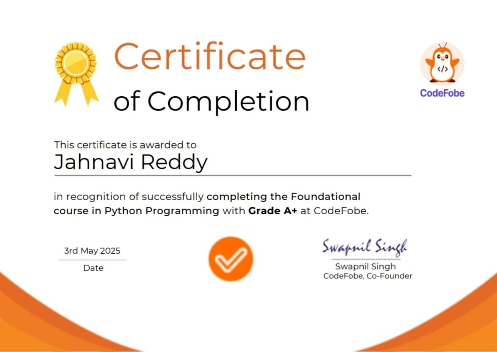
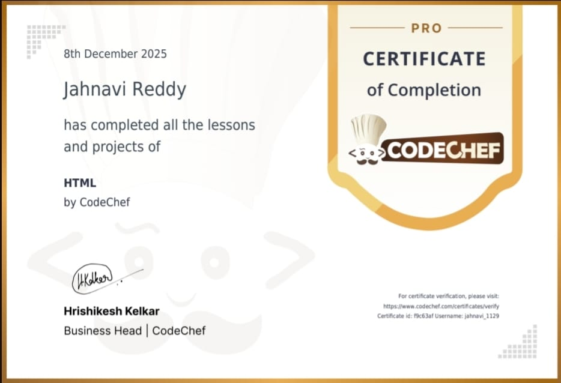
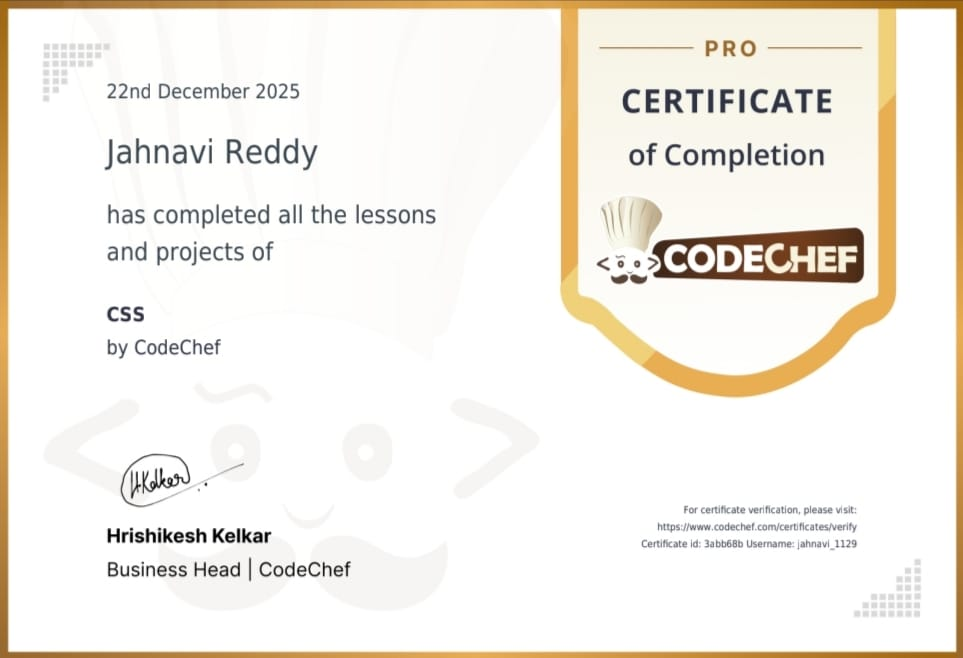
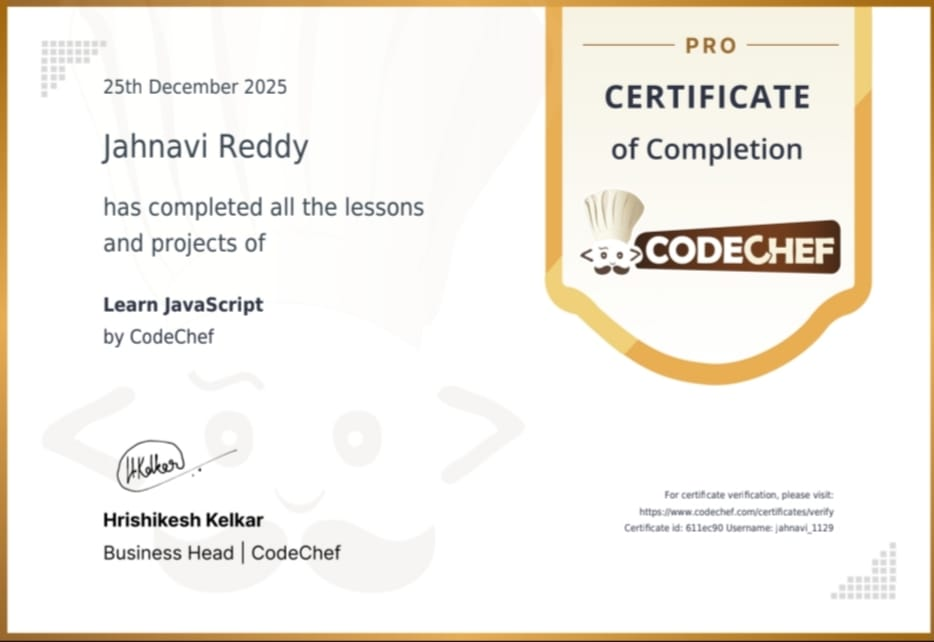
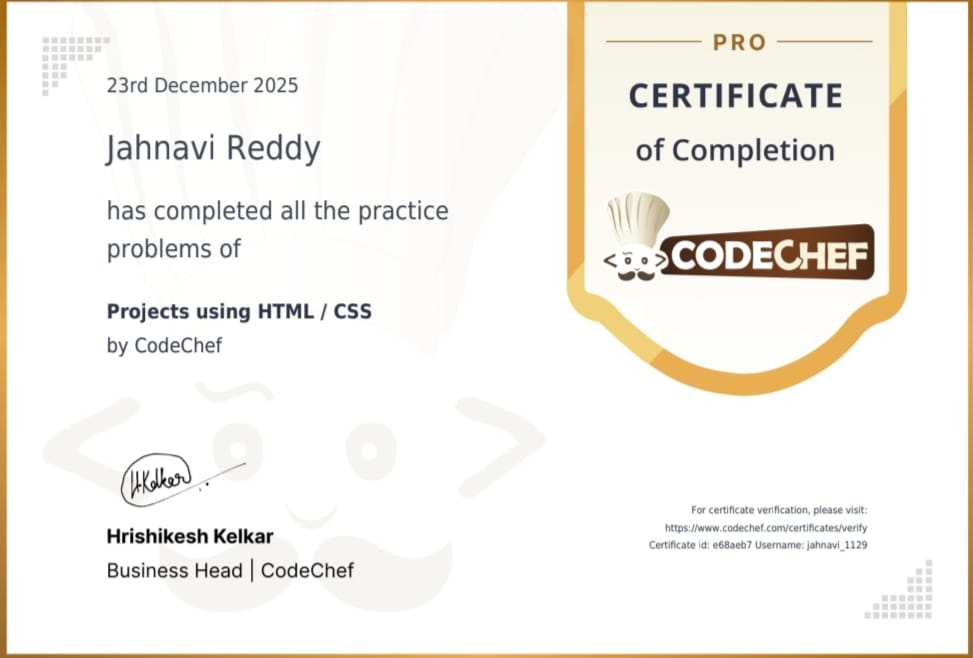

Trainings / Certificates
Foundational Course In Python Programming
Apr 2025 - May 2025

CodeFobe, Virtual
Learn the basic python programming by CodeFobe.
AWS Cloud Practitioner Essential
Sep 2025

AWS Training And Certification , Virtual
This course gave me a strong foundation in AWS services , cloud concepts , security , and architecture.
AWS Cloud Quest: Cloud Practitioner
Sep 2025

AWS Training And Certification , Virtual
This program give me a hands on experience in cloud computing it is very helpful to build my experience and gain the badge by AWS Training and Certification.
Web Development With AI
Oct 2025 - Dec 2025

Internshala Trainings , Virtual
Successfully completed a 8 weeks online certified training on Web Development with AI. The training consisted of HTML, CSS, JavaScript, Bootstrap, DBMS, PHP, React.
HTML
Dec 2025

CodeChef , Virtual
Successfully completed HTML course by CodeChef. HTML is used to gives the structure to the pages.
CSS
Dec 2025

CodeChef , Virtual
Successfully completed CSS course by CodeChef. CSS is used to design and style the website.
JavaScript
Dec 2025

CodeChef , Virtual
Successfully completed JavaScript course by CodeChef.JavaScript is used to add basic functions like menu navigation, buttons,or smoothly scrolling.
Projects Using HTML / CSS
Dec 2025

CodeChef , Virtual
Successfully completed Projects Using HTML / CSS by CodeChef.It is very helpful to build my strengths and hands-on experience.
Frontend Roadmap using HTML / CSS / JS
Jan 2026

CodeChef , Virtual
Frontend developer builds everything you see and interact with on a website or app, like buttons, menus,layouts, using code(HTML, CSS, JS) to make it look good, work smoothly on any device , and be easy for users to navigate.